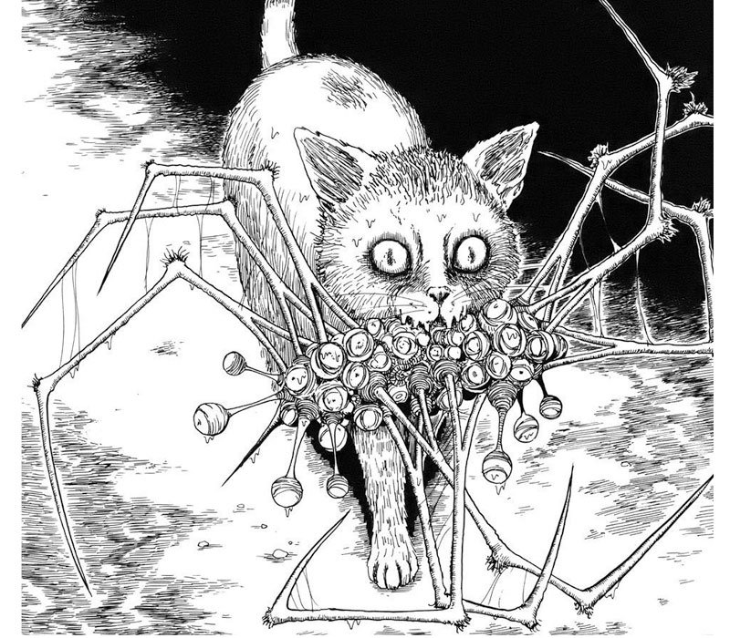
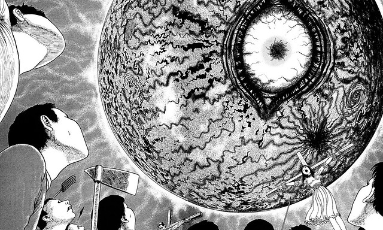
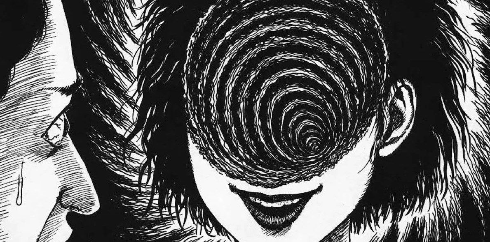
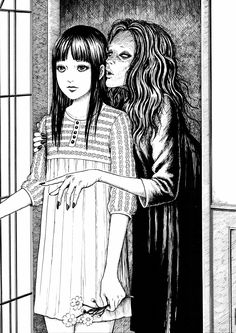
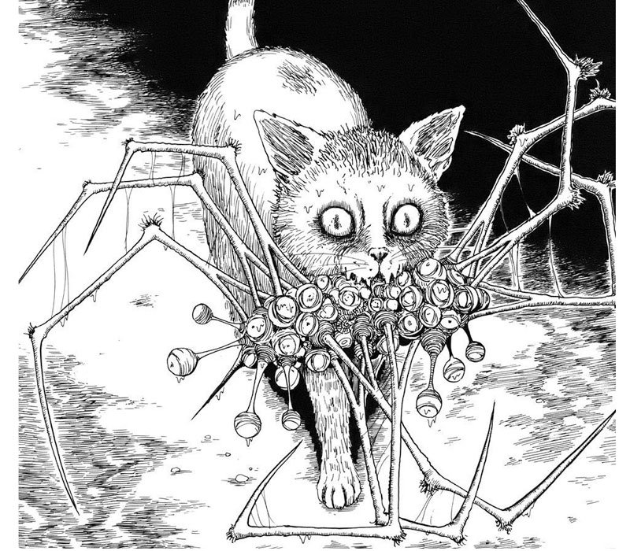
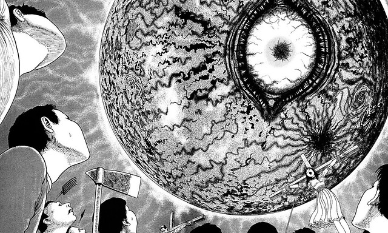
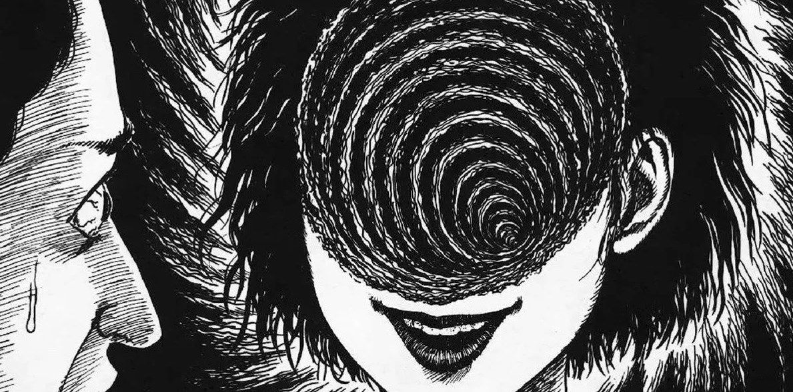
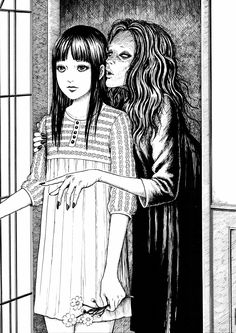

Nació en la prefectura de Gifu en 1963. Su primer manga leído fue Mummy Teacher de Kazuo Umezu. Sus dos hermanas mayores leían revistas con obras de Umezu y Shinichi Koga y, por tanto, él también las leía. Creció en la vieja casa familiar en el campo, cerca de Nagano. De arquitectura tradicional, el baño estaba fuera, en un cobertizo y para hacer más cómodo ir hasta él, sus padres habían excavado un túnel subterráneo de la casa al baño. Oscuro y habitado por grillos araña, al pequeño Ito le daba mucho miedo usarlo. Tales experiencias infantiles se reflejarán más tarde en sus obras.
Itō comenzó a dibujar manga a los cuatro años, inspirándose en lo que leía en las revistas y continuó escribiendo y dibujando como un hobby hasta que empezó a trabajar como protésico dental en 1984. En 1987, la revista mensual Gekkan Halloween publicó uno de sus relatos al lograr una mención honorífica en el Premio Kazuo Umezu (con el mismo Umezu entre el jurado).
Además de Kazuo Umezu, Itō ha citado a Hideshi Hino, Furuka Shinichi, Yasutaka Tsutsui, Edgar Allan Poe y H. P. Lovecraft como principales influencias en sus obras más famosas. Algunos de los temas recurrentes de la obra de Ito incluyen el terror, la sangre, personajes aparentemente normales que comienzan a actuar irracionalmente, la ruptura de la sociedad, los organismos de aguas profundas, y la inevitabilidad de la propia muerte. El universo de Itō es también muy cruel y caprichoso; sus personajes se encuentran a menudo víctimas de malévolas circunstancias antinaturales sin ninguna razón discernible o castigados fuera de toda proporción por infracciones aparentemente leves contra una orden natural desconocido e incomprensible.
El director de cine Guillermo del Toro escribió en su cuenta de Twitter oficial que Itō fue originalmente un colaborador para el videojuego Silent Hills (del cual tanto Del Toro como el diseñador de videojuegos Hideo Kojima eran los directores principales) aunque un año más tarde del anuncio el proyecto fue cancelado por Konami.

 






